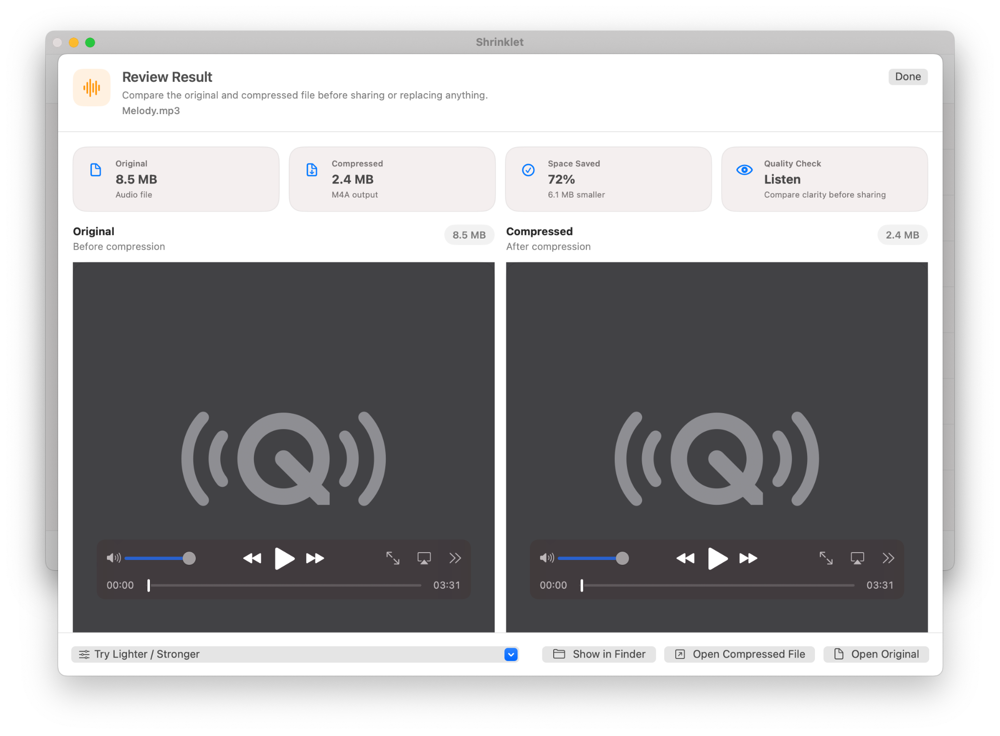

Compress supported audio files
Work with common audio files such as MP3, M4A, WAV, and other supported formats.
Compress locally on macOS, keep the workflow understandable, and use one polished app for PDFs, images, videos, and audio instead of juggling multiple tools.

A focused Mac compressor should be fast to understand, private by design, and clear about results.
Work with common audio files such as MP3, M4A, WAV, and other supported formats.
Use bitrate, sample-rate, mono/stereo, and metadata options when you need more control.
Review original and compressed audio with playback controls before sending the file.
Shrinklet is designed for Mac users who need smaller files for email, uploads, client delivery, storage cleanup, school portals, workplace systems, and everyday sharing. It keeps compression local, offers simple presets, and makes before-and-after savings easy to understand.
Yes. Shrinklet can compress supported audio files such as MP3, M4A, and WAV.
Yes. Audio settings include bitrate, sample-rate, channel, and metadata options.
Yes. Shrinklet includes an audio review flow with playback controls.
For now, download Shrinklet from the Mac App Store to compress files privately on your Mac.